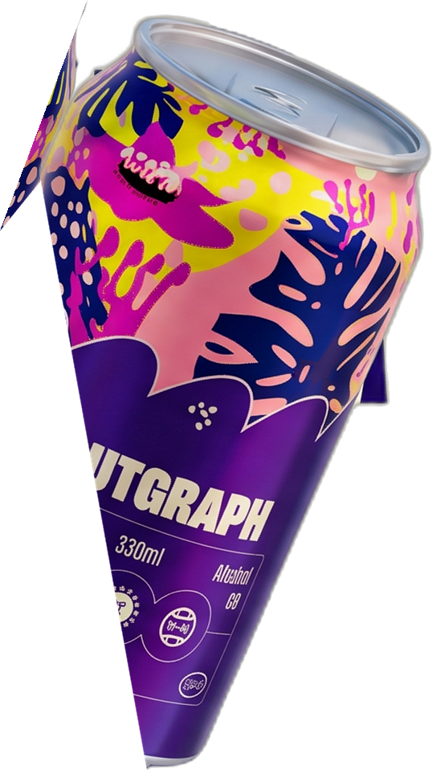
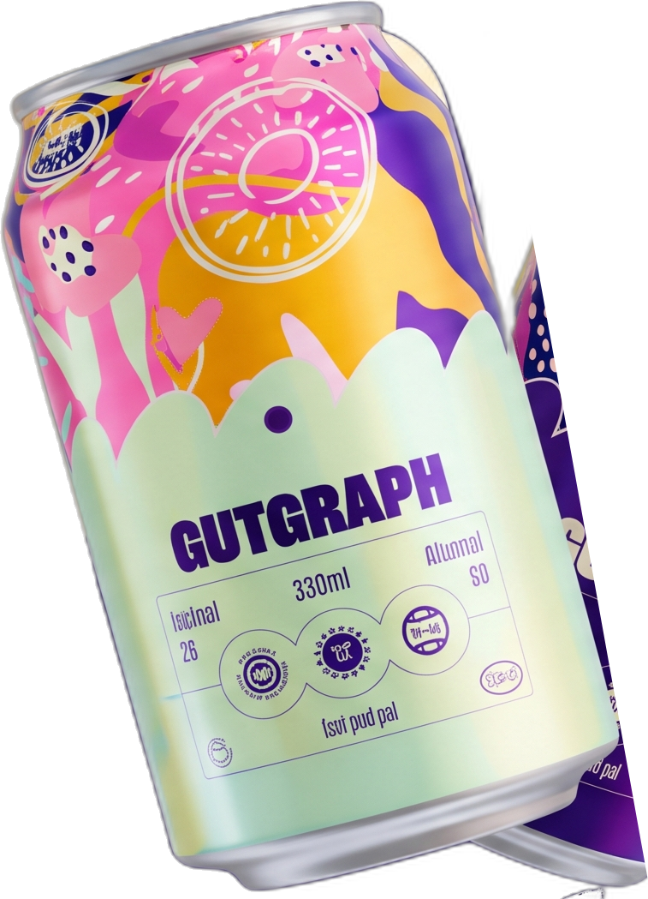

⚡ Generates official serialized tax invoice & microbial prescription


Our unique blend of fruit and natural ingredients will help you discover a great time. No reason not to try it.
Every day, billions of meals are eaten without a thought given to the intricate biochemical dialogue between food molecules and your trillions of microbial companions.
GutGraph bridges the chasm between computational flavour chemistry and simulated gut ecology. We don't hand you clinical powders or medicinal syrups that taste like chalk. We create electrifying, hyper-palatable beverages driven by volatile molecular compatibility and transparent microbial rules.
Spices like Lakadong turmeric and Alphonso mango share 103 volatile aroma compounds. We harness these natural overlapping molecules to construct drinks that pair innately with your meal.
Four rule-based educational agents audit your meal for fiber density, fermentation absence, sugar spikes, and botanical diversity. No black boxes. Complete explainability.
"If healthy food tastes like punishment, culture rejects it. Make it delicious first, make it scientific always."
From your plate to your palate. Five explainable stages connecting food breakdown, microbial heuristics, and computational flavour chemistry.
Six bio-engineered beverage identities formulating ancient spices, live cultures, and cold-pressed botanicals into sleek 330ml ready-to-crack cans.
Not in the mood for a can? Discover artisanal subcontinental brews, whipped buttermilk elixirs, and digestive spritzers you can whip up in 3 minutes in your kitchen or hostel mess.
Type your meal or pick one of our sample campus & home dining scenarios to trigger real-time simulated gut-agent analysis and molecular flavour pairing.
Four simulated microbial heuristics audit your meal. Click each agent to inspect their transparent scoring logic.
Flavour chemistry, not guesswork. Explore shared volatile molecules across regional spices and whole botanicals. Click an ingredient node to map its molecular network.
103 shared aromatic volatiles. Jaccard similarity index S = 103 / (130 + 238 - 103) = 0.388. This proves ancient regional spice pairings share rigorous underlying chemical compatibility.
Based on your simulated meal, here is your scientifically paired GutGraph companion drink.
Explainable food science from end to end. We synthesize computational flavor networks with simulated gut ecology heuristics.
Meals are parsed into core taxonomic ingredients and matched against Foodoscope's RecipeDB repository.
Four simulated gut agents evaluate prebiotic fiber, presence of live ferments, free sugar loads, and botanical species count.
Our algorithm queries shared volatile molecules between identified meal spices and potential beverage ingredients.
Pairings leverage pharmacokinetic synergy (such as black pepper's piperine elevating curcumin bioavailability by 2000%).
GutGraph is an educational decision-support and flavor-discovery platform developed for the Fork It 2026 hackathon. GutGraph does not perform biological microbiome diagnostics, stool metagenomics sequencing, or clinical medical evaluations.
The simulated gut agents represent literature-backed dietary heuristics (such as fiber recommendations from the American Gut Project and fermentation indices from Sonburg et al., Cell 2021). Molecular flavor similarities are mathematical representations from Foodoscope FlavorDB. Always consult a certified healthcare professional or registered dietitian for medical dietary guidance.
Conceptualizing how hostel students (aged 18–25) and university canteens can transform everyday dining into an interactive gut-health discovery ritual.
Students scan a tabletop QR sticker in the dining hall, tap what they are eating from that day's mess menu, and receive an instant recommendation for a matching can or freshly churned chaas at the counter.
Hostel meals are often heavy on refined carbs, palm oil, and missing whole fiber. GutGraph identifies the exact nutritional void and prescribes affordable, fresh spiced beverages using spices Indian canteens already stock.
Replacing sugary energy drinks and high-fructose sodas with live botanical spritzers that keep cognition sharp without triggering post-meal blood sugar crashes.
"Logs dinner at 11 PM: 2-minute instant noodles + soda. GutGraph alerts her to the zero-fiber gap and points her to a 3-minute Haldi-Ginger Chaas recipe to make at her hostel kettle."